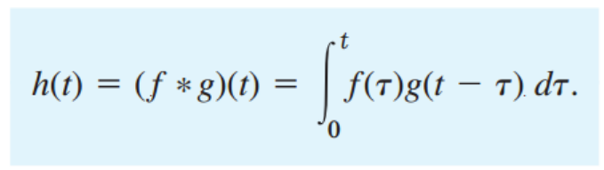
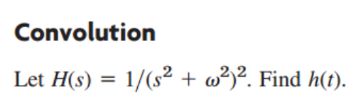
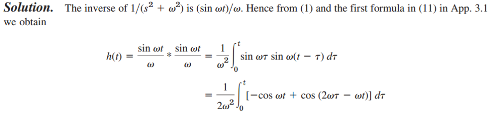
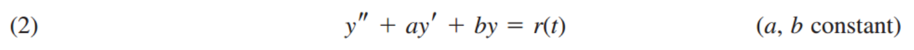
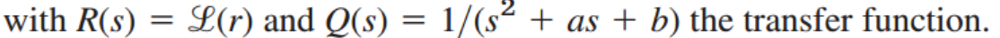
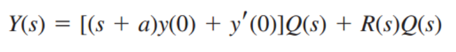
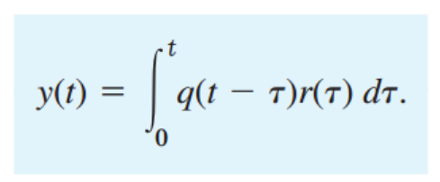

---
{
"layout": "note",
"title": "[Engineering Mathematics] Ch 6. Laplace Transform - Convolution. Integral Eq.",
"journal": true,
"section": "Study",
"topic": "Engineering Mathematics",
"excerpt": "[Engineering Mathematics] Ch 6. Laplace Transform - Convolution. Integral Eq. 자, Linearity 성질을 이용해서, Laplace transform의 합은 합치거나 쪼개",
"classes": "wide",
"permalink": "/blog/mechanical-engineering/engineering-mathematics/engineering-mathematics-ch-6-laplace-transform-convolution-integral-eq/",
"study_area": "Mechanical",
"date": "2024-04-10",
"source_url": "https://jeffdissel.tistory.com/m/56",
"header": {
"teaser": "/blog/mechanical-engineering/engineering-mathematics/engineering-mathematics-ch-6-laplace-transform-convolution-integral-eq/images/img-001.png"
}
}
---
{% raw %}[Engineering Mathematics] Ch 6. Laplace Transform - Convolution. Integral Eq.
자, Linearity 성질을 이용해서,
Laplace transform의 합은 합치거나 쪼개지는게 가능하였다.
하지만, Multiplication은 성립 하지 않는다.
f = e^t, g = 1인 경우를 생각해보자, L(f) L(g) 의 곱은 L(f*g) 일까??
L(1) = 1/s 이므로, 단순하게 아니라는 것은 확인 할 수 있다.
곱의 법칙이 생각보다 많이 쓰이기 때문에, 수학자들은 Laplace 곱이 성립하도록
h(t) 를 f(t) g(t) 로부터 다음과 같이 정의하였다.

H,F,G를 h(t), f(t) , g(t)의 Laplace transform 이라고 할때,
H = F 곱하기 G가 위 를 만족하는 경우 성립 한다는 것이다.
아마 의문이 들것이다. 굳이 ??????
저렇게 어려운 식으로 억지로 만들만큼 라플라스 곱이 쓸모가 있을까?
간단한 예시로 꽤 쓸모있다는 것을 바로 책에서 보여줬다. ㅋㅋㅋㅋ


H(s)를 두개의 곱을 쪼갠 후 각자의 역 Laplace를 알기 때문에 h(t)를 유도 할 수 있다.
Integral Method 를 사용하여 Nonhomogeneous Linear ODE 를 풀어보자.
다음과 같이 2차 Linear Non homogeneous ODE가 있다고 하자.

이전 post에서 Q(s)를 Transfer Function이라고 부르고, 다음과 같이 정의한다고 했다


여기서 y(0) = y'(0) = 0 인 경우,
Y(s) = R(s) Q(s) 가 되어 Laplace곱으로 표현된다.
이제 아까 전에 배운, Integral Method를 사용하면,

{% endraw %}